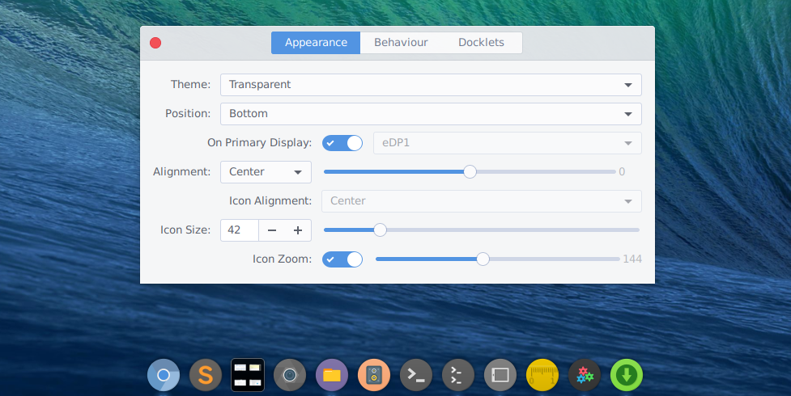
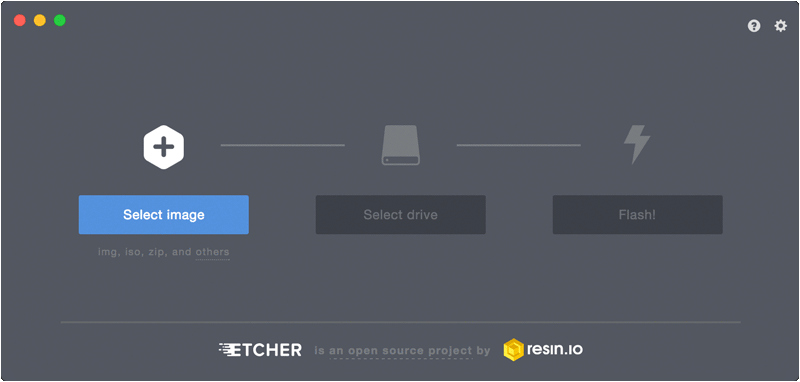

If you are an avid Linux user you might be using many apps and tools. In this post, I will show you some essential open source applications you should install.
Guake
Guake is a simple feature-rich drop-down terminal, which you can access quickly by binding a key to it. Here are some cool features of Guake:
- Appears when you call and disappears once you are done by pressing a predefined hotkey (F12 by default)
- Multi-tab
- Quick Open in your favorite text editor with a click on a file name (with line number support)
- Customizable hotkeys for tab access, reorganization, background transparency, font size,...
- Multi-monitor support (open on a specified monitor, open on mouse monitor)
- Save terminal content to a file
Installation
Manjaro
sudo pacman -S guake
Ubuntu / Mint
sudo apt install guake
KDE-Connect
KDE-Connect is my one of my favorite app, it is used to connect all your devices, it is developed by KDE and comes pre-installed in KDE desktop environment, but you can use it in other desktop environments also. Some of the cool features of KDE-Connect are :
- Clipboard Sharing - Whatever is copied to clipboard of your Android device, it will get synced with Linux system and vice versa
- Media Control - You can control audio, video, change/play/pause the track being played on your Linux system with your Android device.
- Notification Sharing - You can turn on a feature to get notifications of your device to your Linux system, you can also receive notification from Linux system to connected device. USE CASE - While watching a video on Linux system, if you receive a phone call on your Android device then the video will be paused and you will get the notification about the call.
- File Sharing - You can transfer files from your Linux system to Android device and vice versa.
- Battery Information - You can get the battery information of Android on your Linux system
- Wireless mouse/keyboard - You can use your Android phone as wireless mouse/keyboard
Installation
Manjaro / Arch based
sudo pacman -S kdeconnect
Ubuntu / Mint
sudo add-apt-repository ppa:webupd8team/indicator-kdeconnect
sudo apt update
sudo apt install kdeconnect indicator-kdeconnect
On Android: Download it from play store
# NOTE: Don't forget to give notification access in your phone to display phone's notification in your laptop
Safe Eyes
If you have bad habits like sitting for a long time behind your computer, not drinking enough water etc. then you need safe eyes. It is a free, open source, simple and beautiful, yet extensible break reminder alternative to EyeLeo. Here is the link to the GitHub repository.
Installation
Manjaro
yaourt -S safeeyes
Ubuntu / Mint
sudo add-apt-repository ppa:slgobinath/safeeyes
sudo apt update
sudo apt install safeeyes
youtube-dl
youtube-dl is the best open source command line python based program for downloading videos or extracting audio files from streaming websites such as YouTube, Dailymotion, and Vimeo.
Features :
- Download in different format/quality
- Audio Only download also available
- Playlist download
sudo curl -L https://yt-dl.org/downloads/latest/youtube-dl -o /usr/local/bin/youtube-dl
sudo chmod a+rx /usr/local/bin/youtube-dlYou can read documentation here
CopyQ
CopyQ is an advanced clipboard manager with editing and scripting features.
- Store text, HTML, images or any other custom formats
- Quickly browse and filter items in clipboard history
- Sort, create, edit, remove, copy/paste, drag and drop items in tabs
- Add notes or tags to items
- System-wide shortcuts with customizable commands
- Paste items with shortcut or from tray or main window
- Ignore clipboard copied from some windows or containing some text
- Support for simple Vim-like editor and shortcuts
Installation
Manjaro
yaourt -S copyqUbuntu / Mint
sudo add-apt-repository ppa:hluk/copyq
sudo apt update
sudo apt install copyq
Simplenote
Simplenote was started for ios and then expanded to include many OS. It is an open source project and have following features
- History
- Collaboration
- Publishing
- Tags
- Pinning
You can download it here
Tilix
Tilix is an advanced GTK3 tiling terminal emulator that follows the Gnome Human Interface guidelines. Tilix has following main features :
- Custom links - Terminals support custom titles and custom hyperlinks.
- Drag & Drop - Terminals can be rearranged using drag and drop both within and between windows.
- Image Support -Transparent background image support
- Multiple Panes - Layout terminals in any fashion by splitting them horizontally or vertically.
- Notifications -Support notifications when processes are completed out of view.
- Persistent Layouts - Grouping of terminals can be saved and loaded from disk.
Check this youtube video to find out more.
Installation
Manjaro
yaourt -S tilixUbuntu / Mint
sudo add-apt-repository ppa:webupd8team/terminix
sudo apt update
sudo apt install tilix# If you install Tilix then you don't require guake because you can also use Tilix as drop-down terminal.
Anbox
Now you can run Android apps like any other native application on your Linux system. Android devices are based on Linux kernel but its user environment is heavily based on Java and Google service, unlike Linux based distros which uses GNU environment. So Anbox is an Android emulator which puts the Android OS into a container and integrate core system services into a GNU/Linux system.
It has the following features:
- Open Source
- No Limit
- Secure
- Performant
- Integrated
- Convergent
Find out more here
Plank
Plank is meant to be the simplest dock on the planet. The goal is to provide just what a dock needs and absolutely nothing more. It is, however, a library which can be extended to create other dock programs with more advanced features.

Installation
Manjaro
yaourt -S plank
Ubuntu / Mint
sudo add-apt-repository ppa:ricotz/docky
sudo apt-get update
sudo apt-get install plankTo configure plank run following command
plank --preferences
Etcher
Flash OS images to SD cards & USB drives, safely and easily. Check Github repo here

For installation go to etcher.io
Rhythmbox
Although this program is pre-installed on most of the desktop environment, if you don't have it then you should give it a try. Rhythmbox is one of the best offline music player available for Linux. It has following features
- SoundCloud - Rhythmbox can browse and play sounds from SoundCloud, via built-in SoundCloud plugin.
- Podcasting - Rhythmbox can subscribe to podcasts from the iTunes Store, Miroguide.com or by manually providing a podcast feed URL
- Web Remote Control - Rhythmbox can be controlled remotely with a Web browser, via the inbuilt Web remote control plugin.
- Internet Radio Streaming

# If you think this list is missing some of your favorite apps/tools then comment them below.


blog comments powered by Disqus